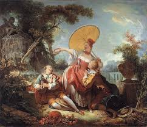
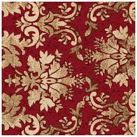

A diferencia de los estilos que lo precedieron, el Rococó no buscaba dar lecciones morales ni representar el poder absoluto. Su filosofía era, en esencia, una celebración de la existencia terrenal y el placer de los sentidos.
Inspirado por un retorno a las ideas de Epicuro, el pensamiento de la época defendía que la felicidad se encontraba en las pequeñas cosas: una conversación inteligente, un jardín bien cuidado o un encuentro romántico. La naturaleza ya no era algo salvaje que temer, sino un escenario refinado por el hombre para su propio disfrute.
Este periodo puso a la mujer y a la feminidad en el centro del pensamiento intelectual. Los salones dirigidos por mujeres influyentes se convirtieron en los nuevos templos de la razón, donde la filosofía se mezclaba con el ingenio y la elegancia.

El ideal del amor galante

La naturaleza como ornamento